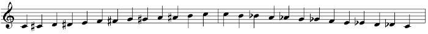

Music is often expressed visually in the form of musical notation. The root of this notation is the concept of a note, which is a representation of a pitch, as well as the length of said pitch. The pitch is determined by the location of a note on the staff, which is a series of five lines representing different pitches. Notes appearing lower on the staff have lower pitch, while notes appearing higher on the staff have higher pitch. Notes are designated the letters A-G, which repeat over and over again as you go higher or lower in pitch. A scale contains a single repetition of these notes - for example, C D E F G A B C. The two C's in this example are an octave apart.
Notes can be placed either in the "spaces" or the "lines" on a staff to represent specific pitches. For example, in the treble clef, the lines represent the notes E G B D F, whereas the spaces represent the notes F A C E. However, this notation lacks the granularity to represent each semitone in an octave. A semitone represents notes in-between the ones that are represented with simple letters. While only seven letters are used in a scale, there are actually twelve distinct notes in an octave, at least in the tradition Western tuning system. This is discussed further below.
In order to represent all twelve notes, sharps ♯ and flats ♭ are used. Sharps raise a note by a semitone, while flats lower a note by a semitone. This creates twelve pitches in a scale: A, A♯/B♭, B, C, C♯/D♭, D, D♯/E♭, E, F, F♯/G♭, G, and G♯/A♭. As you can see, some pitches can be represented multiple ways. Playing all of these notes sequentially creates the chromatic scale.
The chromatic scale, going up and down, starting on C.
The splitting of an octave into twelve semitones has not always been the de facto tuning for music; in fact, this is a mainly Western practice that has only arisen in the past half-millenia or so. Pitch is a continuum, and while the relatively modern implementation of the 12-tone system allows for a particularly clean sound and created a firm foundation for modern music theory, there are many other systems of thought on the matter.
Notes in-between semitones can be described in terms of the 12-tone system by using cents. There are one-hundred cents between each semitone.
The umbrella term of microtones is used to describe notes in-between semitones, or notes in other tuning systems that do not align with the semitones in the twelve-tone system. More information regarding different tunings and an introduction to microtonal notation can be found on the following page.